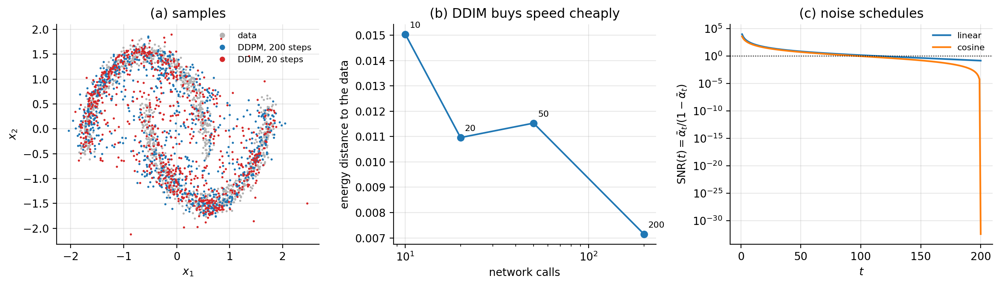

16. Chapter 16: Diffusion Models and Normalizing Flows#
Section Towards diffusion models ended by describing three restrictions that turn a hierarchical variational autoencoder into something else entirely: latent variables of the same dimension as the data, a fixed rather than learned encoder, and a schedule ending in pure noise. This chapter carries that programme out. The result is the diffusion model, which produces the best samples of any generative model in this book and does so with an objective of startling simplicity: predict the noise that was added.
The chapter has a second half. Diffusion models buy sample quality by giving up an exact likelihood – like the VAE, they optimise a bound. Normalizing flows take the opposite trade: they insist on an exact, computable likelihood and pay for it with an architectural constraint, that every layer be invertible with a tractable Jacobian. Putting the two side by side is the clearest way to see what generative modelling actually costs, and the two turn out to be connected: in the continuous-time limit a diffusion model is a flow, one whose velocity field is the score.
The material follows the lecture notes for week fifteen of FYS-STK3155/4155 and the accompanying notes on diffusion models, normalizing flows and their comparison.
16.1. From hierarchical VAEs to diffusion#
A Markovian hierarchical VAE, Eq. (15.16), has a chain of latents \(\bm{x}_1,\dots,\bm{x}_T\) with \(\bm{x}_0\equiv\bm{x}\) the data. Impose the three restrictions:
Same dimension. Every \(\bm{x}_t\) lives in \(\mathbb{R}^{d}\). There is no bottleneck, so nothing can collapse in the sense of Section Two characteristic failures.
Fixed encoder. The forward process \(q\) is not learned. It adds a prescribed amount of Gaussian noise at each step. There is no \(\bm{\phi}\) to optimise, so the encoder cannot be blamed for a loose bound.
Terminal noise. The schedule is chosen so that \(q(\bm{x}_T\mid\bm{x}_0)\approx\mathcal{N}(\bm{0},\bm{I})\) for every \(\bm{x}_0\). The prior then matches by construction and costs nothing.
All three difficulties of Chapter 15 have been designed away, and the entire modelling burden falls on the reverse process: a single network that must learn to undo one step of noising.
16.1.1. The forward process#
Each step scales the current state down slightly and adds noise:
with \(\beta_t\in(0,1)\) the noise schedule. The scaling by \(\sqrt{\alpha_t}\) is what keeps the variance bounded: without it the state would random-walk away to infinity.
The first useful fact is that the whole chain collapses.
Proposition 16.1 (Closed-form forward marginal)
With \(\bar\alpha_t = \prod_{s=1}^{t}\alpha_s\),
Proof
By induction. The case \(t=1\) is Eq. (16.1). Assume the result at \(t-1\) and substitute:
with \(\bm{\epsilon}',\bm{\epsilon}''\) independent standard normals. Since independent Gaussians add in variance, \(\bm{\eta}\) is Gaussian with variance
using \(\bar\alpha_t=\alpha_t\bar\alpha_{t-1}\).
Equation (16.2) is arithmetic, not a network: any noise level can be reached in one step. That is what makes training cheap, since a mini-batch can sample \(t\) uniformly and jump straight there. We verify it against simulating the chain step by step:
=== 1. the closed-form marginal vs simulating the chain ===
t simulated mean/sd of x_t closed form sqrt(abar), sqrt(1-abar)
10 1.9946 / 0.0744 1.9945 / 0.0741
50 1.8787 / 0.3446 1.8763 / 0.3463
100 1.5585 / 0.6279 1.5524 / 0.6305
200 0.7230 / 0.9323 0.7271 / 0.9316
The two coefficients have names. The signal-to-noise ratio
falls from \(\gg1\) at \(t=0\) to \(\approx0\) at \(t=T\), and the whole objective can be rewritten in terms of it. Two schedules are standard: the linear one of Ho et al. [ho2020], \(\beta_t\) from \(10^{-4}\) to \(0.02\) over \(T=1000\), and the cosine one of Nichol and Dhariwal [nichol2021], \(\bar\alpha_t\propto\cos^{2} \!\left(\frac{t/T+s}{1+s}\cdot\frac{\pi}{2}\right)\) with \(s=0.008\). Figure 16.1(c) shows both. The linear schedule destroys the signal abruptly at the end and wastes early steps on nearly identical images; the cosine schedule spreads the destruction out.
16.1.2. The forward posterior#
To reverse the process we would like \(q(\bm{x}_{t-1}\mid\bm{x}_t)\), which is intractable – it requires knowing the data distribution. But conditioned additionally on \(\bm{x}_0\) it is available in closed form, and that is enough.
Theorem 16.2 (Forward posterior)
with
Proof
By Bayes’ rule and the Markov property,
all three factors being Gaussian by Eq. (16.1) and Proposition 16.1. The denominator does not involve \(\bm{x}_{t-1}\), so as a function of \(\bm{x}_{t-1}\) the log-numerator is
a quadratic in \(\bm{x}_{t-1}\) and therefore Gaussian. Collecting the quadratic coefficient gives the precision
using the same identity as in Proposition 16.1, and inverting gives \(\tilde\beta_t\). Collecting the linear coefficient gives \(\tilde{\bm{\mu}}_t/\tilde\beta_t =\sqrt{\alpha_t}\bm{x}_t/(1-\alpha_t) +\sqrt{\bar\alpha_{t-1}}\bm{x}_0/(1-\bar\alpha_{t-1})\), and multiplying through by \(\tilde\beta_t\) gives Eq. (16.5).
This is a formula worth checking rather than trusting, and with one-dimensional data we can compute the posterior by quadrature and compare:
=== 2. the forward posterior vs Bayes by quadrature (1-D) ===
t quadrature mean / var closed form mean / var
5 1.128590 / 4.287e-04 1.128590 / 4.287e-04
50 0.930699 / 4.916e-03 0.930699 / 4.916e-03
150 0.908095 / 1.499e-02 0.908095 / 1.499e-02
199 0.902574 / 1.994e-02 0.902574 / 1.994e-02
Agreement to six decimal places in both mean and variance, at every noise level.
16.2. The objective#
The ELBO of Theorem 15.1 applies unchanged, and substituting the Markov structure decomposes it into \(T\) terms:
The last term contains no parameters – restriction (3) makes it approximately zero by construction – and each \(\mathcal{L}_{t-1}\) is a KL between two Gaussians, the first of which Theorem 16.2 gives exactly. Choosing the learned reverse to be Gaussian with the same variance, \(p_{\bm{\theta}}(\bm{x}_{t-1}\mid\bm{x}_t) =\mathcal{N}(\bm{\mu}_{\bm{\theta}}(\bm{x}_t,t),\tilde\beta_t\bm{I})\), the KL collapses to a squared distance between the means,
16.2.1. Predicting the noise#
Now comes the step that makes diffusion models practical. Inverting Eq. (16.2) for \(\bm{x}_0\) and substituting into Eq. (16.5) re-expresses the target mean in terms of the noise.
Proposition 16.3 (Noise parameterisation)
With \(\bm{x}_0 = (\bm{x}_t-\sqrt{1-\bar\alpha_t}\,\bm{\epsilon})/\sqrt{\bar\alpha_t}\),
Proof
Substituting and using \(\sqrt{\bar\alpha_{t-1}/\bar\alpha_t}=1/\sqrt{\alpha_t}\), the coefficient of \(\bm{x}_t\) becomes
using \(\alpha_t+\beta_t=1\) and \(\alpha_t\bar\alpha_{t-1}=\bar\alpha_t\); the coefficient of \(\bm{\epsilon}\) is \(-\beta_t\sqrt{1-\bar\alpha_t}/[\sqrt{\alpha_t}(1-\bar\alpha_t)] =-\beta_t/[\sqrt{\alpha_t}\sqrt{1-\bar\alpha_t}]\).
So if a network \(\bm{\epsilon}_{\bm{\theta}}(\bm{x}_t,t)\) predicts the noise, setting \(\bm{\mu}_{\bm{\theta}}\) to Eq. (16.8) with \(\bm{\epsilon}_{\bm{\theta}}\) in place of \(\bm{\epsilon}\) turns Eq. (16.7) into a weighted squared error in the noise. Ho et al. observed that dropping the weight improves samples, giving the objective actually used:
It is worth pausing on how ordinary this is. After all the variational machinery, the training loop is: take a data point, pick a random noise level, add that much noise, and regress on the noise you added. It is a squared-error regression of exactly the kind Chapter 3 began with.
Three equivalent targets
Because \(\bm{x}_t\), \(\bm{x}_0\) and \(\bm{\epsilon}\) are related by the single linear equation (16.2), predicting any one determines the others:
Predicting \(\bm{\epsilon}\) is the DDPM default; predicting \(\bm{x}_0\) allows an explicit prior on images but tends to over-smooth; predicting the “velocity” \(\bm{v}\) is numerically better near \(t=0\) where \(\bar\alpha_t\to1\) and the \(\bm{\epsilon}\) parameterisation divides by something small. All three give the same KL when substituted back; they differ only in conditioning.
16.2.2. The same thing as score matching#
There is a second reading of Eq. (16.9) that connects it to a literature developed independently.
Proposition 16.4 (Noise prediction is score estimation)
For the forward marginal (16.2),
Hence a network trained by Eq. (16.9) implicitly estimates the score of the noisy data distribution at every noise level, via \(\bm{s}_{\bm{\theta}}(\bm{x}_t,t) =-\bm{\epsilon}_{\bm{\theta}}(\bm{x}_t,t)/\sqrt{1-\bar\alpha_t}\).
Proof
The log-density of Eq. (16.2) is \(-\|\bm{x}_t-\sqrt{\bar\alpha_t}\bm{x}_0\|^{2}/[2(1-\bar\alpha_t)]\) plus a constant; differentiating gives the first equality, and the second is Eq. (16.2) rearranged. The denoising score matching identity of Vincent, \(\nabla\log q(\bm{x}_t) =\mathbb{E}_{q(\bm{x}_0\mid\bm{x}_t)}[\nabla\log q(\bm{x}_t\mid\bm{x}_0)]\), then transfers the statement from the conditional to the marginal.
We check Eq. (16.10) by automatic differentiation:
=== 3. the score of the forward marginal is the negative noise ===
t -eps/sqrt(1-abar_t) d/dx_t log q(x_t|x_0) |diff|
10 -7.76607851 -7.76607851 1.24e-14
80 -1.18377136 -1.18377136 4.44e-16
199 -0.67627979 -0.67627979 1.11e-16
Recall Eq. (12.18): the denoising autoencoder of Chapter 12 was already estimating a score, and we noted then that it anticipated diffusion models. This is where that remark is cashed in. A diffusion model is a denoising autoencoder trained at all noise levels at once, with a sampling procedure attached.
The continuous limit. Taking \(T\to\infty\) with \(\beta_t\to\beta(t)\,\mathrm{d}t\), the forward chain becomes a stochastic differential equation,
an Ornstein-Uhlenbeck process. Anderson’s theorem gives the time reversal,
which requires exactly the score that Proposition 16.4 says the network has learned. The physics reading is immediate: Eq. (16.11) is the Langevin equation of Chapter 14 in a harmonic trap, and Eq. (16.12) is that process run backwards with the drift corrected by the force \(-\nabla\log p_t\).
16.3. Sampling#
Generation runs the reverse chain from noise. Ancestral, or DDPM, sampling takes \(\bm{x}_T\sim\mathcal{N}(\bm{0},\bm{I})\) and iterates
with \(\bm{z}=\bm{0}\) at the last step. This costs \(T\) network evaluations, which at \(T=1000\) is the reason diffusion models are slow.
Denoising diffusion implicit models reduce that. The key observation is that the training objective (16.9) depends only on the marginals \(q(\bm{x}_t\mid\bm{x}_0)\), not on the joint, so any process with the same marginals is compatible with the same trained network. Choosing a non-Markovian one gives
which at \(\sigma_t=0\) is entirely deterministic and may be run on any subsequence of steps. We measure what that is worth on a two-dimensional target, using the energy distance between samples and data:
sampler network calls energy distance to the data
DDPM, T=200 200 0.00715
DDIM, 50 steps 50 0.01153
DDIM, 20 steps 20 0.01096
DDIM, 10 steps 10 0.01504
Twenty steps instead of two hundred – a tenfold saving – costs a factor of about \(1.5\) in this statistic, and even ten steps remain usable. Figure 16.1(a) shows that the DDIM samples at twenty steps are visually indistinguishable from the DDPM samples at two hundred.

Figure 16.1: (a) Two-dimensional data with samples from the trained model: DDPM with \(T=200\) ancestral steps and DDIM with \(20\). (b) Energy distance against the number of network evaluations; the tenfold reduction from \(200\) to \(20\) steps costs about \(50\%\) in this statistic. (c) The signal-to-noise ratio (16.3) for the linear and cosine schedules. The linear schedule destroys the remaining signal abruptly at the end, which is what the cosine schedule was introduced to avoid.
The implementation is short, because the forward process needs no network:
def q_sample(x0, t, abar, eps):
"""x_t = sqrt(abar_t) x_0 + sqrt(1-abar_t) eps, Eq. (16.marginal)."""
a = abar[t][:, None]
return np.sqrt(a) * x0 + np.sqrt(1.0 - a) * eps
def loss(P, x0, t, eps, abar, T):
"""L_simple, Eq. (16.simple): predict the noise from the noisy sample."""
xt = q_sample(x0, t, abar, eps)
return np.mean(np.sum((eps - eps_net(P, xt, t, T)) ** 2, axis=1))
16.4. Normalizing flows#
Diffusion models, like VAEs, optimise a bound. Normalizing flows refuse that compromise: they construct a model whose likelihood is exact. The price is paid in architecture.
The idea is one theorem from multivariable calculus. Let \(\bm{z}\sim p_0\) be a simple base distribution – a standard normal – and let \(\bm{x}=f(\bm{z})\) with \(f\) invertible and differentiable. Then the density transforms by the Jacobian:
Theorem 16.5 (Change of variables)
If \(f:\mathbb{R}^{d}\to\mathbb{R}^{d}\) is a diffeomorphism and \(\bm{x}=f(\bm{z})\), then
Composing \(K\) such maps, \(f=f_K\circ\cdots\circ f_1\), the log-determinants add:
Each layer transports probability mass; the total transformation is the composition, and the accounting is exact at every step.
The difficulty is visible in Eq. (16.16). A general \(d\times d\) Jacobian determinant costs \(\bigO(d^{3})\), which is hopeless for images. Every flow architecture is a way of making that determinant cheap.
Coupling layers. The construction of RealNVP splits the coordinates in two, passes one half through unchanged, and uses it to compute an affine transformation of the other:
The Jacobian is block triangular, so its determinant is the product of the diagonal, and
computable in \(\bigO(d)\) regardless of how complicated the networks \(\bm{s}\) and \(\bm{t}\) are. Alternating which half is transformed lets every coordinate be affected. Autoregressive flows use the same triangular trick with \(x_i=f_i(z_i;x_1,\dots,x_{i-1})\), and continuous normalizing flows replace the discrete composition by an ordinary differential equation \(\mathrm{d}\bm{x}/\mathrm{d}t=\bm{v}(\bm{x},t)\), for which the instantaneous change of variables gives
a trace rather than a determinant, and cheaper still.
16.4.1. Verifying exactness#
The selling point of flows is that the likelihood is exact, so it is exactly what should be checked. Three tests, each of which a VAE or a diffusion model would fail by construction:
=== 1. the analytic log-det vs the numerical Jacobian determinant ===
sample 0: analytic 0.0269231819 numerical 0.0269231819 diff 5.52e-16
sample 1: analytic -0.0850673946 numerical -0.0850673946 diff 8.33e-17
sample 2: analytic -0.0407256759 numerical -0.0407256759 diff 1.18e-16
=== 2. the flow is exactly invertible ===
max|f^-1(f(z)) - z| = 2.22e-16
=== 3. the density integrates to one (2-D, quadrature) ===
integral of p(x) dx = 1.00000000
The third is the one to dwell on. A flow is a normalised density: no partition function, no bound, no Monte Carlo. Chapter 14 could not compute \(Z\); Chapter 15 could only bound the evidence; a flow evaluates \(\log p(\bm{x})\) exactly for any \(\bm{x}\), and here that claim is confirmed by numerical integration to eight decimal places.
An exact likelihood is not automatically a good model
Our from-scratch RealNVP maximised the likelihood on a two-moons target and reached \(5.46\) nats per point – and produced useless samples. The diagnosis is in the decomposition (16.15): the latent codes \(\bm{z}=f^{-1}(\bm{x})\) came out with per-coordinate standard deviations of \(0.118\) and \(0.120\) rather than one, contributing \(\log p_0(\bm{z})=-1.85\), while the Jacobian term contributed \(+7.31\). The model was contracting the data into a small ball near the origin, where the Gaussian prior is nearly flat and costs almost nothing, and collecting an unbounded reward from the log-determinant. Sampling \(\bm{z}\sim\mathcal{N}(\bm{0},\bm{I})\) then lands far outside the region the data occupy.
This is not a coding error – the three checks above pass to machine precision, and the two contributions sum to the reported likelihood. It is the classical observation that the likelihood of a continuous density is unbounded above: the same degeneracy that lets a Gaussian mixture achieve infinite likelihood by collapsing one component onto a single data point. Flows on data concentrated near a lower-dimensional manifold are especially prone to it. The standard remedies – adding noise to the data, batch normalisation between coupling layers, a soft penalty on \(\|\bm{z}\|\), or simply a smaller learning rate with many more steps – are the subject of an exercise. We report the failure rather than tuning until it disappears, because knowing which term of Eq. (16.15) is being exploited is worth more than a working demonstration.
16.5. Comparison#
Five generative models have now appeared and they differ in one respect above all: what they are willing to give up in order to make the likelihood computable.
\noalign{} Model |
Latent space |
Likelihood |
Sampling cost |
|---|---|---|---|
\noalign{}\noalign{} RBM (Ch. 14) |
fixed \(d_h\), discrete |
unnormalised, \(Z\) unknown |
Markov chain |
VAE (Ch. 15) |
fixed \(d_h < d\) |
lower bound (ELBO) |
one pass |
Normalizing flow |
same dimension \(d\) |
exact |
one pass |
Diffusion |
same dimension \(d\) |
lower bound (ELBO) |
\(T\) passes |
\noalign{} |
Table 16.1: The generative models of Chapters 14 to 16. “Exact likelihood” means \(\log p(\bm{x})\) can be evaluated for a given \(\bm{x}\) without approximation.
The trade is visible along the rows. The RBM has the most flexible energy function and the worst inference: no normalised likelihood and a Markov chain for every sample. The VAE gives up exactness for a bound and buys single-pass sampling and a compressed, interpretable latent space. The flow gives up architectural freedom – invertibility, equal dimension, cheap Jacobians – and buys an exact likelihood. Diffusion gives up sampling speed and buys the best sample quality of the four, because it never has to squeeze the data through a bottleneck and its objective is a sequence of easy regressions rather than one hard one.
The connection. Flows and diffusion are not as different as the table suggests. A continuous normalizing flow, Eq. (16.19), transports \(p_0\) to \(p_{\mathrm{data}}\) along a deterministic velocity field. The probability flow ODE of a diffusion model,
has by construction the same time-marginals as the SDE (16.11) and is exactly such a field. So a trained diffusion model is a continuous normalizing flow whose velocity is built from the score, and one may therefore compute exact likelihoods from a diffusion model by integrating Eq. (16.19) along Eq. (16.20). The difference is how the field is obtained: a flow learns it by maximum likelihood through a constrained architecture, a diffusion model learns it by score matching with no architectural constraint at all.
The physics reading
Equation (16.11) is an Ornstein-Uhlenbeck process, the Langevin dynamics of a particle in a harmonic trap; the forward process is relaxation to equilibrium and the reverse process is that relaxation run backwards, which is possible only because we have learned \(\nabla\log p_t\), the thermodynamic force. The forward process increases entropy monotonically until the distribution is the maximum-entropy Gaussian; generation is the controlled reversal of that increase, and the network stores exactly the information needed to pay for it. Optimal transport gives a third reading: Eq. (16.20) moves mass along a particular path between \(p_0\) and \(p_{\mathrm{data}}\), and asking for the cheapest such path is the Benamou-Brenier formulation of the Wasserstein distance, which is what flow-matching methods optimise directly.
Latent diffusion. The two constructions combine. Run a VAE first to compress images into a lower-dimensional latent space, then run diffusion in that space rather than in pixel space. The autoencoder handles the high-frequency detail that makes pixel diffusion expensive; the diffusion model handles the structure the autoencoder would blur. This is how large-scale image generators are built, and it is a good illustration of a theme running through this book: the architectures are components, and the interesting systems are compositions.
16.6. Summary and the programs#
A diffusion model is a hierarchical VAE with the encoder frozen, the bottleneck removed and the prior matched by construction. What remains is a single network trained by Eq. (16.9) – add noise, predict the noise – which after all the variational derivation is a squared-error regression.
Two closed forms make it work, and we verified both rather than quoting them. Proposition 16.1 collapses the chain so any noise level is one step away, confirmed against step-by-step simulation. Theorem 16.2 gives the reverse target exactly when conditioned on \(\bm{x}_0\), confirmed against Bayes-by-quadrature to six decimals at every noise level. Proposition 16.4 identifies the trained network as a score estimator, confirmed to \(10^{-14}\), which connects diffusion to the denoising autoencoder of Chapter 12 and to the Langevin dynamics of Chapter 14.
Sampling is the expensive part, and DDIM makes it cheap: twenty steps rather than two hundred cost about \(50\%\) in energy distance and are visually indistinguishable.
Normalizing flows make the opposite trade. Theorem 16.5 gives an exact likelihood, and our implementation confirmed all three consequences to machine precision – analytic log-determinant, exact invertibility, and a density integrating to \(1.00000000\). But exactness is not sufficiency: our flow reached \(5.46\) nats while producing useless samples, by contracting the data into a ball where the prior is flat (\(\log p_0=-1.85\)) and harvesting the Jacobian term (\(+7.31\)). The likelihood of a continuous density is unbounded above, and a flow will find that out if allowed to.
The programs are in the directory
doc/BookML/BookPrograms/chapter16_diffusion.
Every listing above appears there as a numbered file, and four modules run start to finish and reproduce the numbers quoted in the text:
diffusion.py– the schedules, the closed-form marginal (16.2), the forward posterior (16.4), the noise-prediction network, \(\mathcal{L}_{\mathrm{simple}}\), and DDPM and DDIM sampling.flows.py– coupling layers, the exact log-determinant, the forward and inverse maps and the exact log-likelihood.verify_diffusion.py– the three diffusion checks and the three flow checks of Sections The forward process, The forward posterior, The same thing as score matching and Verifying exactness.run_compare.py– the sampler comparison of Section Sampling and the flow diagnosis of the notebox.
The figure is generated by ch16_figures.py in
doc/BookML/BookFigures; it is not drawn by hand.
16.7. Exercises#
16.7.1. Warm-up exercises#
The forward marginal. (a) Prove Proposition 16.1 by induction, stating where independence is used. (b) Show that \(\bar\alpha_t\to0\) requires \(\sum_t\beta_t\to\infty\), and compute \(\bar\alpha_T\) for the linear schedule with \(T=1000\). (c) What goes wrong if the \(\sqrt{\alpha_t}\) in Eq. (16.1) is omitted?
The posterior. Complete the square in Theorem 16.2 yourself. Then check the two limits: what are \(\tilde{\bm{\mu}}_t\) and \(\tilde\beta_t\) when \(\beta_t\to0\), and when \(t=1\)?
Noise parameterisation. Verify Proposition 16.3 algebraically. Then derive the corresponding expression for the \(\bm{x}_0\) and \(\bm{v}\) parameterisations of the notebox, and show all three give the same \(\tilde{\bm{\mu}}_t\).
Schedules. Plot \(\bar\alpha_t\), \(1-\bar\alpha_t\) and \(\mathrm{SNR}(t)\) for the linear and cosine schedules. At what \(t\) does each fall to \(\mathrm{SNR}=1\), and what does the cosine schedule fix?
Change of variables. (a) Prove Theorem 16.5 in one dimension from the definition of a density. (b) For the coupling layer (16.17), write the Jacobian as a block matrix and confirm Eq. (16.18). (c) Why must \(\bm{s}\) and \(\bm{t}\) depend on \(\bm{z}_1\) only?
Counting. A diffusion model with \(T=1000\) and a flow with \(K=32\) coupling layers both generate one image. How many network evaluations does each need, and how many does each need to evaluate \(\log p(\bm{x})\) for a given \(\bm{x}\)?
16.7.2. Project-style exercise: diffusion and flows#
Part a: the forward process. Implement both schedules and verify Proposition 16.1 against step-by-step simulation and Theorem 16.2 against Bayes-by-quadrature, as in Section The forward posterior. Verify Eq. (16.10) by automatic differentiation.
Part b: training. Train a noise-prediction network on a two-dimensional target. Compare the weighted ELBO objective of Eq. (16.7) against \(\mathcal{L}_{\mathrm{simple}}\) and report which gives better samples. Then compare the \(\bm{\epsilon}\), \(\bm{x}_0\) and \(\bm{v}\) parameterisations.
Part c: sampling. Reproduce the DDPM-versus-DDIM comparison, extending it to \(\eta>0\) so that DDIM interpolates towards DDPM. Plot sample quality against network evaluations for several \(\eta\) and identify where the frontier lies.
Part d: flows. Implement coupling layers and verify all three exactness properties of Section Verifying exactness. Then reproduce the failure described in the notebox, and fix it: try adding noise to the data, batch normalisation between layers, a penalty on \(\|\bm{z}\|^{2}\), and a much smaller learning rate. Report which remedy works and, more importantly, explain why in terms of the two contributions to Eq. (16.15).
Part e: exact likelihoods from a diffusion model. Implement the probability flow ODE (16.20) with your trained score network and integrate Eq. (16.19) to obtain exact log-likelihoods. Compare against the ELBO on the same data points. How large is the gap, and does it behave like the VAE gaps of Section Implementation and verification?
Part f: a physics application. Train a diffusion model on configurations of the two-dimensional Ising model at several temperatures, as in part e of the Chapter 14 project. Compare the energy and magnetisation histograms of the generated configurations against the true ones, and compare the whole thing against the RBM you trained there. Which model reproduces the critical region better, and at what computational cost?
Part g: the comparison. Take one data set and fit all four models of Table 16.1 at matched parameter counts. Report, for each: training time, sampling time per example, sample quality by a two-sample statistic, and whether a likelihood is available and how it was obtained. Then write a paragraph recommending one of them for a specific scientific task of your choosing, and defend the choice against the other three.